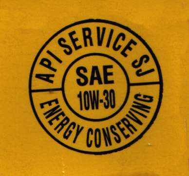

Engine oil is the oil inside the crankcase of a four-stroke. On most motorcycles one oil serves the engine, the gearbox and the wet clutch together. Two-strokes are different: their oil is burned with the fuel, either mixed in the tank or fed by a two-stroke oil pump.
What it does
Oil keeps a thin film between moving metal parts, carries heat away, holds dirt until the next change, stops rust and helps seal the rings. In a motorcycle it must also let the clutch plates grip. Oil breaks down with heat and fills with soot, fuel and metal. Old oil protects badly, and low oil can destroy an engine in minutes.
Signs it is worn or failing
- Oil turns black very soon after a change.
- Clutch slips after fitting car oil.
- Oil level drops, or is too high.
- Milky oil or oil that smells of petrol.
- Oil warning light on.
When to replace it
At the interval in your bike's manual, and sooner in dust, heavy loads or short trips. K-Light 125: first change at 300 km, then every 3000 km. Check the level every few days: Check the engine oil level.
What to match when buying
- Viscosity (for example 10W-30): use the grade in your bike's manual for your climate. The K-Light logs do not state a grade.
- Quality: an API letter (SJ, SL and later) shows engine protection.
- Clutch: for a bike with a wet clutch, choose JASO MA (MA1 or MA2). JASO MB oil is made for scooters with a dry CVT clutch and can make a wet clutch slip. Car oils marked "energy conserving" contain friction modifiers that can also cause slip (Lubrizol).
- Fakes are common. Buy sealed bottles from a known shop. Check the cap seal, clear printing, a batch code and a price that is not far below normal.
- Oil labelled "Energy Conserving", with a starburst mark, can make a wet clutch slip and may lack additives some bike engines need. See Choose engine oil for a four-stroke.
- If one oil serves engine, gearbox and clutch, change it sooner than an engine-only oil.
Fitting notes
- Home job: Change the engine oil and clean the strainer. Change it warm so dirt drains out.
- Check level with the bike upright on level ground, as the manual describes. Do not overfill.
- Take used oil to a collection point; do not pour it on the ground.
Reference (K-Light 125)
| Item | Value | PDF page |
|---|---|---|
| Oil change quantity | 1.1 ± 0.1 L | 53 |
| After engine rebuild | 1.2 ± 0.1 L | 196 |
| Change interval | first at 300 km, then every 3000 km | 51 |
| Settle before level check | 2 to 3 min | 53 |